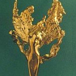

В 2002 году в номинации «Лучший проект в области интеграции психологов в единое профессиональное сообщество» проект ЗПШ СПбГУ-2002 получил звание лауреата национального психологического конкурса «ЗОЛОТАЯ ПСИХЕЯ».
о нас
70+
проектов
6+
краткосрочных образовательных программ
350+
часов лекций
-
-

В 2007 в номинации «Коллективный вклад в становление единого профессионального психологического сообщества» проект ЗПШ СПбГУ-2006 получил звание победителя национального профессионального психологического конкурса «ЗОЛОТАЯ ПСИХЕЯ».
-
В 2002 году в номинации «Лучший проект в области интеграции психологов в единое профессиональное сообщество» проект ЗПШ СПбГУ-2002 получил звание лауреата национального психологического конкурса «ЗОЛОТАЯ ПСИХЕЯ».